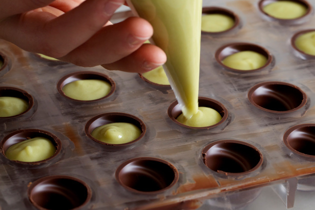

Füllungen
Es gibt im Moment in diese Mannschaft, oh, einige Spieler vergessen ihnen Profi was sie sind. Ich lese nicht sehr viele Zeitungen, aber ich habe gehört viele Situationen. Erstens: wir haben nicht offensiv gespielt. Es gibt keine deutsche Mannschaft spielt offensiv und die Name offensiv wie Bayern. Letzte Spiel hatten wir in Platz drei Spitzen: Elber, Jancka und dann Zickler. Wir müssen nicht vergessen Zickler. Zickler ist eine Spitzen mehr, Mehmet eh mehr Basler. Ist klar diese Wörter, ist möglich verstehen, was ich hab gesagt? Danke. Offensiv, offensiv ist wie machen wir in Platz. Zweitens: ich habe erklärt mit diese zwei Spieler: nach Dortmund brauchen vielleicht Halbzeit Pause. Ich habe auch andere Mannschaften gesehen in Europa nach diese Mittwoch. Ich habe gesehen auch zwei Tage die Training. Ein Trainer ist nicht ein Idiot! Ein Trainer sei sehen was passieren in Platz. In diese Spiel es waren zwei, drei diese Spieler waren schwach wie eine Flasche leer! Haben Sie gesehen Mittwoch, welche Mannschaft hat gespielt Mittwoch? Hat gespielt Mehmet oder gespielt Basler oder hat gespielt Trapattoni? Diese Spieler beklagen mehr als sie spielen! Wissen Sie, warum die Italienmannschaften kaufen nicht diese Spieler? Weil wir haben gesehen viele Male solche Spiel! Haben

Eine wunderbare Heiterkeit hat meine ganze Seele eingenommen, gleich den süßen Frühlingsmorgen, die ich mit ganzem Herzen genieße. Ich bin allein und freue mich meines Lebens in dieser Gegend, die für solche Seelen geschaffen ist wie die meine. Ich bin so glücklich, mein Bester, so ganz in dem Gefühle von ruhigem Dasein versunken, daß meine Kunst darunter leidet. Ich könnte jetzt nicht zeichnen, nicht einen Strich, und bin nie ein größerer Maler gewesen als in diesen Augenblicken. Wenn das liebe Tal um mich dampft, und die hohe Sonne an der Oberfläche der undurchdringlichen Finsternis meines Waldes ruht, und nur einzelne Strahlen sich in das innere Heiligtum stehlen, ich dann im hohen Grase am fallenden Bache liege, und näher an der Erde tausend mannigfaltige Gräschen mir merkwürdig werden; wenn ich das Wimmeln der kleinen Welt zwischen Halmen, die unzähligen, unergründlichen Gestalten der Würmchen, der Mückchen näher an meinem Herzen fühle, und fühle die Gegenwart des Allmächtigen, der uns nach seinem Bilde schuf, das Wehen des Alliebenden, der uns in ewiger Wonne schwebend trägt und erhält; mein Freund! Wenn's dann um meine Augen dämmert, und die Welt um mich her und der Himmel ganz in meiner Seele ruhn wie die Gestalt eine